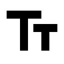

Copyright
Privacy Browser copyright © 2015-2017: Soren Stoutner.
Licenza
Privacy Browser è rilasciato con Licenza GPLv3+ .
Il testo completo è riportato per intero nella parte finale di questo documento. Si precisa che questa è una traduzione non ufficiale della
GNU General Public License, non è stata pubblicata dalla Free Software Foundation, e non stabilisce i termini legali di distribuzione del software
che usa la GNU GPL. Soltanto la versione originale in inglese della GNU GPL fa ciò.
Lo scopo di questa traduzione è unicamente quello di aiutare gli utenti di lingua italiana a comprendere la GNU GPL, e pertanto in caso di eventuali discrepanze tra
traduzione e versione originale in inglese, prevarrà e sarà unicamente la versione originale ad avere valore legale.
E' inoltre ammessa la modifica e la pubblicazione di questa traduzione, ma solamente in accordo ai termini qui riportati.
Il codice sorgente è disponibile su git.stoutner.com.
Attribuzioni
La lista dei server utilizzata dalla funzionalità di blocco degli annunci è tratta da pgl.yoyo.org.
Dal momento che si tratta di una lista di domini non può essere coperta da Copyright.


 sono state derivate da ic_security e ic_language, che fanno parte dell'Android Material icon set e sono state rilasciate sotto Licenza Apache 2.0.
Il testo completo della Licenza è riportato di seguito. Copyright delle modifiche © 2016 Soren Stoutner. Le immagini risultanti sono rilasciate sotto
Licenza GPLv3+.
sono state derivate da ic_security e ic_language, che fanno parte dell'Android Material icon set e sono state rilasciate sotto Licenza Apache 2.0.
Il testo completo della Licenza è riportato di seguito. Copyright delle modifiche © 2016 Soren Stoutner. Le immagini risultanti sono rilasciate sotto
Licenza GPLv3+.
orbot è una versione modificata della icona di stato del progetto Orbot, il cui copyright
è 2009-2010 Nathan Freitas, The Guardian Project. E' rilasciata sotto 3-clause BSD license. Il testo completo della Licenza è riportato di seguito.
Copyright delle modifiche © 2017Soren Stoutner. L'immagine risultante è rilasciata sotto Licenza GPLv3+.
cookie è stata creata da Google. E' stata rilasciata con Licenza Apache 2.0
e può essere scaricata dirattamente dal Material Design Icons. Non è stata modificata ad eccezione del colore e della dimensione.
Le seguenti icone derivano dall'Android Material icon set, che è rilasciato sotto Licenza Apache 2.0.
Non sono state modificatae ad eccezione del colore e della dimensione. Alcune sono state rinominate per coerenza con il tipo di utilizzo all'interno del codice. Le icone con i loro nomi originali sono riportate di seguito.
 ic_add.
ic_add.
ic_arrow_back.
ic_arrow_forward.
ic_bookmark_border.
ic_bug_report.
ic_call_to_action.
ic_chrome_reader_mode.
ic_close.
ic_create_new_folder.
ic_devices_other.
ic_delete.
ic_dns.
ic_edit.
 ic_exit_to_app.
ic_exit_to_app.
ic_expand_less.
ic_expand_more.
ic_file_download.
ic_find_in_page.
ic_folder.
ic_folder_special.
ic_fullscreen.
ic_home.
ic_image.
ic_import_contacts.
ic_important_devices.
ic_info_outline.
ic_language.
ic_list.
ic_local_activity.
ic_location_off.
ic_more.
ic_question_answer.
ic_refresh.
ic_search.
ic_select_all.
ic_settings.
ic_smartphone.
ic_subtitles.
 ic_text_fields.
ic_vertical_align_bottom.
ic_vertical_align_top.
ic_visibility_off.
ic_web.
GNU General Public License
Versione 3, 29 Giugno 2007
Copyright © 2007 Free Software Foundation, Inc.
<http://fsf.org/>
A chiunque è permesso copiare e ridistribuire copie esatte di questo documento di licenza,
ma non è in alcun modo consentito apportarvi modifiche.
Premessa
La GNU General Public License è una licenza libera, basata su copyleft per software e altri tipi di opere.
Le licenze della maggior parte del software e di altre opere materiali
sono pensate per togliere la libertà di condividere e modificare tali opere.
Al contrario, la GNU General Public License ha l'obiettivo di garantire
la libertà di condividere e modificare tutte le versioni di un programma
e di fare in modo che esso rimanga software libero per tutti gli utenti.
Noi, Free Software Foundation, usiamo la GNU General Public License
per la maggior parte del nostro software; essa viene applicata anche a qualunque
altro software rilasciato dall'autore sotto questa licenza.
Chiunque può utilizzare questa licenza per i propri programmi.
Quando parliamo di software libero (free software), ci riferiamo al concetto di libertà,
non al prezzo. Le nostre General Public License sono concepite per garantire
che chiunque abbia la libertà di distribuire copie di software libero
(anche dietro pagamento di un prezzo, se lo desidera), che chiunque riceva o possa ricevere
il codice sorgente se lo vuole, che chiunque possa apportare modifiche al software
o utilizzarne solo alcune porzioni in altri software liberi, e che chiunque sappia
che ha il diritto di fare tutte queste cose.
Per proteggere i vostri diritti, abbiamo la necessità di impedire che altri
vi neghino questi diritti o vi obblighino a rinunciarvi.
Pertanto, chiunque distribuisce o modifica software rilasciato con questa licenza
si assume dei precisi doveri: il dovere di rispettare la libertà degli altri.
Per esempio, chi distribuisce copie di un programma rilasciato sotto questa licenza,
sia a titolo gratuito che mediante pagamento di un prezzo,è obbligato a riconoscere
a chi riceve il software esattamente gli stessi diritti che ha ricevuto.
Deve garantire che chi riceva il software abbia o possa avere accesso al codice sorgente.
E deve far conoscere ai destinatari del software queste condizioni,
così che essi conoscano quali sono i loro diritti.
Gli sviluppatori che utilizzano la GNU GPL proteggono i vostri diritti in due modi:
(1) Rivendicando il copyright sul software, e
(2) offrendovi questa licenza che vi garantisce il diritto legale di copiarlo e/o di modificarlo.
Al fine di proteggere gli sviluppatori e gli autori, la GPL spiega chiaramente
che non esiste nessuna garanzia per questo software libero. Nell'interesse
sia degli utenti che degli autori, la GPL impone che le versioni modificate del software
vengano esplicitamente marcate come “modificate”, in modo tale che eventuali problemi
non vengano erroneamente attribuiti agli autori delle versioni precedenti.
Alcuni dispositivi sono progettati per negare agli utenti l'installazione
o l'esecuzione di versioni modificate del software installato sugli stessi,
anche se il costruttore si riserva la possibilità di farlo.
Ciò è fondamentalmente incompatibile con l'obiettivo di garantire la libertà
degli utenti di modificare il software. Una ripetizione sistematica di tali abusi
avviene nel campo dei dispositivi per usi individuali, e ciò rende questi abusi
ancora più inaccettabili. Pertanto, abbiamo realizzato questa versione della GPL
al fine di proibire una tale pratica per questo tipo di prodotti. Se problemi simili
dovessero sorgere in altri ambiti, saremo pronti ad estendere queste misure
a questi nuovi ambiti in versioni future della GPL, nella maniera che si renderà necessaria
per difendere la libertà degli utenti.
In conclusione, tutti i programmi sono costantemente minacciati dai brevetti sul software.
Gli Stati non dovrebbero permettere ai brevetti di limitare lo sviluppo
e l'utilizzo di software per computer, ma nei Paesi in cui ciò avviene noi vogliamo evitare
il pericolo che i brevetti applicati ad un programma libero possano renderlo, a tutti gli effetti,
proprietario. Per impedire ciò, la GPL assicura che non è possibile utilizzare
i brevetti sul software per rendere un programma non libero.
I termini e le condizioni esatte per la copia, la distribuzione e la modifica del software
sono riportate di seguito.
TERMINI E CONDIZIONI
0. Definizioni.
“Questa Licenza” fa riferimento alla versione 3 della GNU General Public License.
“Copyright” indica anche leggi simili al copyright che riguardano altri tipi di opere,
come le maschere per la produzione di semiconduttori.
“Il Programma” indica qualunque opera che sia soggetta a copyright e che sia rilasciata
sotto questa Licenza. I detentori della licenza sono indicati come “tu”. “Licenziatari” e
“destinatari” possono essere individui o organizzazioni.
“Modificare” un'opera significa copiare o adattare tutta o parte dell'opera
in una maniera che richieda un permesso di copyright, e non indica la semplice azione
di fare una esatta copia dell'opera. L'opera risultante viene chiamata “versione modificata”
dell'opera precedente, oppure viene detta opera “basata sulla” opera precedente.
Un'“opera coperta da questa licenza” indica il Programma originale non modificato
oppure un'opera basata sul Programma.
“Propagare” un'opera significa fare una qualunque cosa con essa che,
in mancanza di un esplicito permesso, ti renda direttamente o indirettamente perseguibile
per violazione secondo le vigenti normative sul copyright,
ad eccezione della semplice esecuzione del Programma su un computer
o della modifica di una copia privata. La Propagazione include la copia,
la distribuzione (con o senza modifiche), la messa a disposizione al pubblico e,
in alcuni stati, altre attività simili e connesse.
“Distribuire” un'opera indica qualunque forma di propagazione
che permetta a terze parti di effettuare o ricevere delle copie.
La mera interazione con un utente attraverso una rete di computer,
senza che ci sia alcun trasferimento di una copia, non è considerata “Distribuzione”.
Una interfaccia utente interattiva fornisce delle “Adeguate Informazioni Legali”
soltanto nel caso in cui includa una apposita funzionalità, resa adeguatamente visibile, che
(1) visualizzi un'adeguata informazione di copyright, e
(2) informi l'utente che non c'è alcuna garanzia sull'opera (eccetto nel caso in cui
delle garanzie sono espressamente fornite), dica che il licenziatario può distribuire
l'opera utilizzando questa Licenza, indichi come è possibile prendere visione di una copia
di questa Licenza.
Se l'interfaccia presenta una lista di comandi o di opzioni, come ad esempio un menù,
una delle opzioni fornite nella lista deve rispettare questa condizione.
1. Codice Sorgente.
Il “codice sorgente” di un'opera indica la forma più indicata
dell'opera per poter effettuare modifiche su di essa. Il “codice oggetto”
indica qualunque forma dell'opera che non sia codice sorgente.
Una “Interfaccia Standard” è una interfaccia che risponde ad uno
standard ufficiale definito da un ente di standardizzazione riconosciuto
o, nel caso di interfacce specifiche per un particolare linguaggio di
programmazione, una interfaccia che è largamente utilizzata dagli
sviluppatori per sviluppare in tale linguaggio.
Le “Librerie di Sistema” di un eseguibile includono qualunque cosa,
eccetto l'opera nel suo insieme, che (a) sia inclusa nella normale forma
di pacchettizzazione di un “Componente Principale”, ma che non è
parte di quel Componente Principale, e (b) che serva solo a consentire
l'uso dell'opera con quel Componente Principale, o per implementare una
Interfaccia Standard per la quale esista una implementazione disponibile
al pubblico in forma sorgente. Un “Componente Principale”, in questo
contesto, è un componente essenziale (kernel, gestore di finestre
eccetera) dello specifico sistema operativo (ammesso che ce ne sia uno)
sul quale l'eseguibile esegue, o un compilatore utilizzato per produrre
il programma, o un interprete di codice oggetto utilizzato per eseguire
il programma.
Il “Sorgente Corrispondente” per un'opera in forma di codice oggetto
è il codice sorgente necessario per generare, installare e (per un
programma eseguibile) eseguire il codice oggetto e per modificare
l'opera, inclusi gli script per controllare le suddette attività di
generazione, installazione ed esecuzione. Non sono incluse le Librerie
di Sistema usate dal programma, o gli strumenti di utilità generica o i
programmi liberamente accessibili che sono utilizzati, senza modifiche,
per portare a termine le suddette attività ma che non fanno parte
dell'opera. Per esempio, il sorgente corrispondente include i file con
le definizioni delle interfacce associati ai file sorgente dell'opera, e
il codice sorgente delle librerie condivise e sottoprogrammi collegati
dinamicamente specificatamente necessari per il programma, ad esempio a
causa di stretta comunicazione dati o di controllo di flusso tra questi
sottoprogrammi e altre parti del programma.
Il Sorgente Corrispondente non include nulla che l'utente possa
rigenerare automaticamente da altre parti del Sorgente Corrispondente
stesso.
Il Sorgente Corrispondente di un'opera in forma di codice sorgente è
l'opera stessa.
2. Principali Diritti.
Tutti i diritti garantiti da questa Licenza sono garantiti per la durata
del copyright sul Programma, e sono irrevocabili ammesso che le
condizioni qui riportate siano rispettate. Questa Licenza afferma esplicitamente il
tuo permesso illimitato di eseguire il Programma non modificato. Il
risultato dell'esecuzione di un programma coperto da questa Licenza è
a sua volta coperto da questa Licenza solo se il risultato stesso, a
causa del suo contenuto, è un'opera coperta da questa Licenza. Questa
Licenza riconosce il tuo diritto all'uso legittimo o altri diritti
equivalenti, come stabilito dalla legislazione sul copyright.
Puoi creare, eseguire e propagare programmi che tu non distribuisci
coperti da questa Licenza, senza alcuna condizione fino a quando la tua
Licenza rimane valida. Puoi distribuire opere coperte da questa Licenza
ad altri al solo scopo di ottenere che essi facciano delle modifiche al
programma esclusivamente per te, o che ti forniscano dei servizi per
l'esecuzione di queste opere, ammesso che tu rispetti i termini di
questa Licenza nel distribuire tutto il materiale per il quale non
detieni il copyright. Coloro i quali creano o eseguono per conto tuo un
programma coperto da questa Licenza lo fanno esclusivamente in tua vece,
sotto la tua direzione e il tuo controllo, in maniera tale che sia
proibito a costoro effettuare copie di materiale di cui detieni il
copyright al di fuori della relazione che intrattengono nei tuoi
confronti.
Distribuire opere coperte da licenza in qualunque altra circostanza è
consentito soltanto alle condizioni espresse in seguito. Non è
consentito sottolicenziare le opere: la sezione 10 lo rende non
necessario.
3. Protezione dei diritti legali degli utenti dalle leggi
anti-elusione.
Nessun programma protetto da questa Licenza può essere considerato
parte di una misura tecnologica di restrizione che sottostia ad alcuna
delle leggi che soddisfano l'articolo 11 del “WIPO copyright treaty”
adottato il 20 Dicembre 1996, o a simili leggi che proibiscono o
limitano l'elusione di tali misure tecnologiche di restrizione.
Quando distribuisci un programma coperto da questa Licenza, rifiuti
tutti i poteri legali atti a proibire l'elusione di misure tecnologiche
di restrizione ammesso che tale elusione sia effettuata nell'esercizio
dei diritti garantiti da questa Licenza riguardo al programma coperto da
questa Licenza, e rinunci all'intenzione di limitare l'operatività o
la modifica del programma per far valere, contro i diritti degli utenti
del programma, diritti legali tuoi o di terze parti che impediscano
l'elusione di misure tecnologiche di restrizione.
4. Distribuzione di Copie Esatte.
Ti è permesso distribuire copie esatte del codice sorgente del
Programma come lo hai ricevuto, con qualunque mezzo, ammesso che tu
aggiunga in maniera appropriata su ciascuna copia una appropriata nota
di copyright; che tu lasci intatti tutti gli avvisi che affermano che
questa Licenza e tutte le clausole non-permissive aggiunte in accordo
con la sezione 7 sono valide per il codice che distribuisci; che tu
lasci intatti tutti gli avvisi circa l'assenza di garanzia; che tu
fornisca a tutti i destinatari una copia di questa Licenza assieme al
Programma.
Puoi richiedere il pagamento di un prezzo o di nessun prezzo per
ciascuna copia che distribuisci, e puoi offrire supporto o garanzia
a pagamento.
5. Distribuzione di Versioni modificate del sorgente.
Puoi distribuire un'opera basata sul Programma, o le modifiche per
produrla a partire dal Programma, nella forma di codice sorgente secondo
i termini della sezione 4, ammesso che tu rispetti anche tutte le
seguenti condizioni:
- a) L'opera deve recare con sè delle informazioni adeguate che
affermino che tu l'hai modificata, indicando la data di modifica.
- b) L'opera deve recare informazioni adeguate che affermino che essa è
rilasciata sotto questa Licenza e sotto le condizioni aggiuntive
secondo quanto indicato dalla Sezione 7. Questa condizione modifica la
condizione espressa alla sezione 4 di “lasciare intatti tutti gli
avvisi”.
- c) Devi rilasciare l'intera opera, nel suo complesso, sotto questa
Licenza a chiunque venga in possesso di una copia di essa. Questa
Licenza sarà pertanto applicata, assieme ad eventuali clausole
aggiunte in osservanza della Sezione 7, all'opera nel suo complesso, a
tutte le sue parti, indipendentemente da come esse siano
pacchettizzate. Questa Licenza nega il permesso di licenziare l'opera
in qualunque altro modo, ma non rende nullo un tale permesso ammesso
che tu lo abbia ricevuto separatamente.
- d) Se l'opera ha delle interfacce utente interattive, ciascuna deve
mostrare delle Adeguate Informazioni Legali; altrimenti, se il
Programma ha delle interfacce interattive che non visualizzano delle
Adeguate Informazioni Legali, il tuo programma non è obbligato a
visualizzarle.
La giustapposizione di un'opera coperta da questa Licenza assieme ad
altre opere separate e indipendenti, che non sono per loro natura
estensioni del Programma, e che non sono combinate con esso a formare un
altro programma più grande, dentro o in uno stesso supporto di
memorizzazione a lungo termine o di distribuzione, è semplicemente
detto “aggregato” se la raccolta e il suo copyright non sono
utilizzati per limitare l'accesso o i diritti legali degli utenti della
raccolta stessa oltre ciò che ciascun singolo programma
consente. L'inclusione di un programma coperto da questa Licenza in un
aggregato non comporta l'applicazione di questa Licenza alle altre parti
dell'aggregato.
6. Distribuzione in formato non-sorgente.
Puoi distribuire un programma coperto da questa Licenza in formato di
codice oggetto secondo i termini delle sezioni 4 e 5, ammesso che tu
fornisca anche il Sorgente Corrispondente in formato comprensibile
da un computer sotto i termini di questa stessa Licenza, in uno dei
seguenti modi:
- a) Distribuendo il codice oggetto in, o contenuto in, un prodotto
fisico (inclusi i mezzi fisici di distribuzione), accompagnato dal
Sorgente Corrispondente su un supporto fisico duraturo comunemente
utilizzato per lo scambio di software.
- b) Distribuendo il codice oggetto in, o contenuto in, un prodotto fisico
(inclusi i mezzi fisici di distribuzione), accompagnato da un'offerta
scritta, valida per almeno tre anni e valida per tutto il tempo
durante il quale tu offri ricambi o supporto per quel modello di
prodotto, di fornire a chiunque possieda il codice oggetto (1) una
copia del Sorgente Corrispondente di tutto il software contenuto nel
prodotto che è coperto da questa Licenza, su un supporto fisico
duraturo comunemente utilizzato per lo scambio di software, ad un
prezzo non superiore al costo ragionevole per effettuare fisicamente
tale distribuzione del sorgente, oppure (2) accesso alla copia del
Sorgente Corrispondente attraverso un server di rete senza alcun costo
aggiuntivo.
- c) Distribuendo copie singole del codice oggetto assieme ad una copia
dell'offerta scritta di fornire il Sorgente Corrispondente. Questa
possibilità è permessa soltanto occasionalmente e per fini non
commerciali, e solo se tu hai ricevuto il codice oggetto assieme ad
una tale offerta, in accordo alla sezione 6b.
- d) Distribuendo il codice oggetto mediante accesso da un luogo designato
(gratis o dietro pagamento di un prezzo), e offrendo un accesso
equivalente al Sorgente Corrispondente alla stessa maniera a partire
dallo stesso luogo senza costi aggiuntivi. Non devi obbligare i
destinatari a copiare il Sorgente Corrispondente assieme al codice
oggetto. Se il luogo dal quale copiare il codice oggetto è un server
di rete, il Sorgente Corrispondente può trovarsi su un server
differente (gestito da te o da terze parti) che fornisca
funzionalità equivalenti per la copia, a patto che tu fornisca delle
indicazioni chiare accanto al codice oggetto che indichino dove
trovare il Sorgente Corrispondente. Indipendentemente da quale server
ospiti il Sorgente Corrispondente, tu rimani obbligato ad assicurare
che esso rimanga disponibile per tutto il tempo necessario a
soddisfare queste condizioni.
- e) Distribuendo il codice oggetto mediante trasmissione peer-to-peer, a
patto che tu informi gli altri peer circa il luogo in cui il codice
oggetto e il Sorgente Corrispondente sono gratuitamente offerti al
pubblico secondo i termini della sezione 6d.
Una porzione separabile del codice oggetto, il cui sorgente è
escluso dal Sorgente Corrispondente e trattato come Libreria di
Sistema, non deve essere obbligatoriamente inclusa nella distribuzione
del codice oggetto del programma.
Un “Prodotto Utente” è un (1) “prodotto consumer”, cioè
qualunque proprietà personale tangibile che è normalmente utilizzata
per scopi personali, familiari o domestici, oppure (2) qualunque cosa
progettata o venduta per essere utilizzata in ambiente domestico. Nella
classificazione di un prodotto come “prodotto consumer”, i casi dubbi
andranno risolti in favore dell'ambito di applicazione. Per un dato
prodotto ricevuto da un dato utente, “normalmente utilizzato” si
riferisce ad un uso tipico o comune di quella classe di prodotti,
indipendentemente dallo stato dell'utente specifico o dal modo in cui
l'utente specifico utilizza, o si aspetta o ci si aspetta che utilizzi,
il prodotto. Un prodotto è un “prodotto consumer” indipendentemente
dal fatto che abbia usi commerciali, industriali o diversi da quelli
“consumer”, a meno che questi usi non rappresentino il solo modo utile
di utilizzare il prodotto in questione.
Le “Informazioni di Installazione” per un Prodotto Utente sono i
metodi, le procedure, le chiavi di autorizzazioni o altre informazioni
necessarie per installare ed eseguire versioni modificate di un
programma coperto da questa Licenza all'interno di un Prodotto Utente, a
partire da versioni modificate dei suoi Sorgenti Corrispondenti. Tali
informazioni devono essere sufficienti ad assicurare che il
funzionamento del codice oggetto modificato non sia in nessun caso
proibito o ostacolato per il solo fatto che sono state apportate delle
modifiche.
Se distribuisci un codice oggetto secondo le condizioni di questa
sezione in, o assieme, o specificatamente per l'uso in o con un Prodotto
Utente, e la distribuzione avviene come parte di una transazione nella
quale il diritto di possesso e di uso del Prodotto Utente viene
trasferito al destinatario per sempre o per un periodo prefissato
(indipendentemente da come la transazione sia caratterizzata), il
Sorgente Corrispondente distribuito secondo le condizioni di questa
sezione deve essere accompagnato dalle Informazioni di
Installazione. Questa condizione non è richiesta se nè tu nè una
terza parte ha la possibilità di installare versioni modificate del
codice oggetto sul Prodotto Utente (ad esempio, se il programma è
installato su una ROM).
La condizione che richiede di fornire delle Informazioni di Installazione
non implica che venga fornito supporto, garanzia o aggiornamenti per un
programma che è stato modificato o installato dal destinatario, o per
il Prodotto Utente in cui esso è stato modificato o installato.
L'accesso ad una rete può essere negato se le modifiche apportate
impattano materialmente sull'operatività della rete o se violano le
regole e i protocolli di comunicazione attraverso la rete.
Il Sorgente Corrispondente distribuito, e le Informazioni di
Installazione fornite, in accordo con questa sezione, devono essere in
un formato che sia pubblicamente documentato (e con una implementazione
pubblicamente disponibile in formato di codice sorgente), e non devono
richiedere speciali password o chiavi per essere spacchettate, lette o
copiate.
7. Condizioni Aggiuntive.
Le “Condizioni Aggiuntive” sono condizioni che completano le
condizioni di questa Licenza permettendo delle eccezioni a una o più
delle condizioni sopra elencate. Le condizioni aggiuntive che sono
applicabili all'intero Programma devono essere considerate come se
fossero incluse in questa Licenza, a patto che esse siano valide secondo
le normative vigenti. Se alcune condizioni aggiuntive fanno riferimento
soltanto ad alcune parti del Programma, quelle parti possono essere
utilizzate separatamente sotto le stesse condizioni, ma l'intero
Programma rimane sottoposto a questa Licenza senza riferimento ad alcuna
condizione aggiuntiva.
Quando distribuisci una copia di un programma coperto da questa Licenza,
puoi, a tua discrezione, eliminare qualunque condizione aggiuntiva dalla
copia, o da parte di essa. (Le Condizioni Aggiuntive possono essere
scritte in maniera tale da richiedere la loro rimozione in certi casi di
modifica del Programma). Puoi aggiungere Condizioni Aggiuntive su
materiale, aggiunto da te ad un'opera coperta da questa Licenza, per il
quale hai o puoi garantire un'adeguata licenza di copyright.
Indipendentemente da qualunque altra condizione di questa Licenza, e per
il materiale che aggiungi ad un'opera coperta da questa Licenza, puoi
(se autorizzato dai legittimi detentori del copyright per il suddetto
materiale) aggiungere alle condizioni di questa Licenza delle condizioni
che:
- a) Negano la garanzia o limitano la responsabilità del Programma in
maniera differente da quanto riportato nelle sezioni 15 e 16 di questa
Licenza; oppure
- b) Richiedono il mantenimento di specifiche e circostanziate informative
legali o di note di attribuzione ad autori nel materiale o assieme
alle Adeguate Informazioni Legali mostrate dal Programma che lo
contiene; oppure
- c) Proibiscono di fornire informazioni errate o ingannevoli sull'origine
e la provenienza del materiale in oggetto, o richiedono che versioni
modificate di tale materiale siano appositamente marcate in maniera
differente rispetto alla versione originale; oppure
- d) Limitano l'utilizzo per scopi pubblicitari del nome dei detentori del
copyright o degli autori del materiale; oppure
- e) Rifiutano di garantire diritti secondo le leggi sulla proprietà
intellettuale circa l'uso di nomi, marchi di fabbrica o similari;
oppure
- f) Richiedono l'indennizzo dei detentori del copyright o degli autori del
materiale in oggetto da parte di chi distribuisce il materiale (o
versioni modificate dello stesso) con impegni contrattuali circa la
responsabilità nei confronti del destinatario, per qualunque
responsabilità che questi impegni contrattuali dovessero imporre
direttamente ai suddetti detentori del copyright e autori.
Tutte le altre condizioni addizionali non-permissive sono considerate
“ulteriori restrizioni”, secondo il significato specificato alla
sezione 10. Se il Programma o parti di esso contengono, all'atto della
ricezione dello stesso, informative che specificano che esso è
soggetto a questa Licenza assieme ad una condizione che è una
“ulteriore restrizione”, puoi rimuovere quest'ultima condizione. Se un
documento di licenza contiene ulteriori restrizioni ma permette di
rilicenziare o distribuire il Programma con questa Licenza, puoi
aggiungere al Programma del materiale coperto dalle condizioni di quel
documento di licenza, a patto che le ulteriori restrizioni non compaiano
nelle versioni rilicenziate o ridistribuite.
Se aggiungi ad un Programma coperto da questa Licenza delle condizioni
aggiuntive in accordo con questa sezione, devi aggiungere anche, nei
file sorgenti corrispondenti, un avviso che riassuma le condizioni
aggiuntive applicate a quei file, ovvero un avviso che specifichi dove
è possibile trovare copia delle condizioni aggiunte.
Tutte le Condizioni aggiuntive, permissive o non-permissive, devono
essere espresse nella forma di una licenza scritta e separata, o
espresse esplicitamente come eccezioni; in entrambi i casi valgono le
condizioni succitate.
8. Cessazione di Licenza.
Non puoi propagare o modificare un programma coperto da questa Licenza
in maniera diversa da quanto espressamente consentito da questa
Licenza. Qualunque tentativo di propagare o modificare altrimenti il
Programma è nullo, e provoca l'immediata cessazione dei diritti
garantiti da questa Licenza (compresi tutte le eventuali licenze di
brevetto garantite ai sensi del terzo paragrafo della sezione 11).
In ogni caso, se cessano tutte le violazioni di questa Licenza, allora
la tua licenza da parte di un dato detentore del copyright viene
ripristinata (a) in via cautelativa, a meno che e fino a quando il
detentore del copyright non cessa esplicitamente e definitivamente la
tua licenza, e (b) in via permanente se il detentore del copyright non
ti notifica in alcun modo la violazione entro 60 giorni dalla cessazione
della licenza.
Inoltre, la tua licenza da parte di un dato detentore del copyright
viene ripristinata in maniera permanente se il detentore del copyright ti
notifica la violazione in maniera adeguata, se questa è la prima volta
che ricevi una notifica di violazione di questa Licenza (per qualunque
Programma) dallo stesso detentore di copyright, e se rimedi alla
violazione entro 30 giorni dalla data di ricezione della notifica di
violazione.
La cessazione dei tuoi diritti come specificato in questa sezione non
provoca la cessazione delle licenze di terze parti che abbiano ricevuto
copie o diritti da te secondo questa Licenza. Se i tuoi diritti cessano
e non sono ristabiliti in via permanente, non hai diritto di ricevere
nuove licenze per lo stesso materiale, secondo quanto stabilito nella
sezione 10.
9. L'ottenimento di copie non richiede l'accettazione della Licenza.
Non sei obbligato ad accettare i termini di questa Licenza al solo fine
di ottenere o eseguire una copia del Programma. Similmente, propagazioni
collaterali di un Programma coperto da questa Licenza che occorrono come
semplice conseguenza dell'utilizzo di trasmissioni peer-to-peer per la
ricezione di una copia non richiedono l'accettazione della Licenza. In
ogni caso, solo e soltanto questa Licenza ti garantiscono il permesso di
propagare e modificare qualunque programma coperto da questa
Licenza. Queste azioni violano le leggi sul copyright nel caso in cui tu
non accetti questa Licenza. Pertanto, modificando o propagando un
programma coperto da questa Licenza, indichi implicitamente la tua
accettazione della Licenza.
10. Licenza Automatica per i successivi destinatari.
Ogni qual volta distribuisci un programma coperto da questa Licenza, il
destinatario riceve automaticamente una licenza, dal detentore
originario del copyright, di eseguire, modificare e propagare il
programma, nel rispetto di questa Licenza. Non sei ritenuto responsabile
del rispetto di questa Licenza da parte di terze parti.
Una “transazione d' entità” è una transazione che trasferisce il
controllo di una organizzazione, o sostanzialmente di tutti i suoi beni,
che suddivide una organizzazione o che fonde più organizzazioni. Se la
propagazione di un programma coperto da questa Licenza è conseguente
ad una transazione di entità, ciascuna parte che ha ruolo nella
transazione e che riceve una copia del programma riceve allo stesso tempo
qualsiasi licenza sul programma che i predecessori della parte
possedevano o potevano rilasciare nel rispetto del paragrafo precedente,
e in più il diritto di possesso del Sorgente Corrispondente del
programma dal predecessore in interesse, se il predecessore lo possiede
o se può ottenerlo senza troppe difficoltà.
Non puoi imporre nessuna ulteriore restrizione sull'esercizio dei
diritti garantiti o affermati da questa Licenza. Per esempio, non puoi
imporre un prezzo di licenza, una royalty, o altri costi per
l'esercizio dei diritti garantiti da questa Licenza, a non puoi dar
corso ad una controversia (ivi incluse le controversie incrociate o la
difesa in cause legali) affermando che siano stati violati dei
brevetti a causa della produzione, dell'uso, della vendita, della
messa in vendita o dell'importazione del Programma o di sue parti.
11. Brevetti.
Un “contribuente” è un detentore di copyright che autorizza l'uso
secondo questa Licenza di un Programma o di un'opera basata sul
Programma. L'opera così licenziata viene chiamata “versione del
contribuente”.
I “diritti essenziali di brevetto” da parte di un contribuente sono
tutti i diritti di brevetto che appartengono o che sono controllati dal
contribuente, che siano già acquisiti o che saranno acquisiti in
futuro, che possano essere violati in qualche maniera, consentita da
questa Licenza, generando, modificando o vendendo la versione del
contribuente, ma non includono i diritti che possano essere violati
soltanto come conseguenza di ulteriori modifiche alla versione del
contribuente. In relazione a questa definizione, il termine
“controllo” include il diritto di garantire sottolicenze di brevetto
in maniera consistente con le condizioni di questa Licenza.
Ciascun contribuente ti garantisce la licenza di brevetto sui diritti
essenziali di brevetto del contribuente stesso non-esclusiva, valida in
tutto il mondo, esente da royalty, di creare, usare, vendere, offrire in
vendita, importare e altrimenti eseguire, modificare e propagare i
contenuti della versione del contribuente.
Nei tre paragrafi successivi, con “licenza di brevetto” si intende
qualunque accordo o contratto, comunque denominato, di non
rivendicazione di un brevetto (come ad esempio un permesso esplicito di
utilizzare un brevetto o un accordo di rinuncia alla persecuzione per
violazione di brevetto). “Garantire” una tale licenza di brevetto ad
una parte significa portare a termine un tale accordo o contratto di non
rivendicazione di brevetto contro la parte.
Se distribuisci un programma coperto da questa Licenza, confidando
consapevolmente su una licenza di brevetto, e il Sorgente Corrispondente
per il programma non è reso disponibile per la copia, senza alcun
onere aggiuntivo e comunque nel rispetto delle condizioni di questa
Licenza, attraverso un server di rete pubblicamente accessibile o
tramite altri mezzi facilmente accessibili, allora devi (1) fare in modo
che il Sorgente Corrispondente sia reso disponibile come sopra, oppure
(2) fare in modo di rinunciare ai benefici della licenza di brevetto per
quel particolare programma, oppure (3) adoperarti, in maniera
consistente con le condizioni di questa Licenza, per estendere la
licenza di brevetto a tutti i destinatari successivi. “Confidare
consapevolmente” significa che tu sei attualmente cosciente che,
eccettuata la licenza di brevetto, la distribuzione da parte tua di un
programma protetto da questa Licenza in un paese, o l'utilizzo in un
paese del programma coperto da questa Licenza da parte di un
destinatario, può violare uno o più brevetti in quel paese che tu
hai ragione di ritenere validi.
Se, come conseguenza o in connessione con una singola transazione o
con un dato accordo, distribuisci, o fai in modo di distribuire, un
programma coperto da questa Licenza, e garantisci una licenza di
brevetto per alcune delle parti che ricevono il Programma
autorizzandole ad utilizzare, propagare, modificare o distribuire una
specifica copia del Programma, allora la licenza di brevetto che
fornisci è automaticamente estesa a tutti i destinatari del
Programma coperto da questa Licenza e delle opere basate sul
Programma.
Una licenza di brevetto è “discriminatoria” se non include
nell'ambito della sua copertura, proibisce l'esercizio, o è vincolata
al non-esercizio di uno o più dei diritti che sono specificatamente
garantiti da questa Licenza. Non puoi distribuire un Programma coperto
da questa Licenza se sei parte di un accordo con una terza parte la cui
attività comprende la distribuzione di software, secondo il quale tu
sei costretto ad un pagamento alla parte terza in funzione della tua
attività di distribuzione del Programma, e in conseguenza del quale la
parte terza garantisce, a qualunque delle parti che riceveranno il
Programma da te, una licenza di brevetto discriminatoria (a) assieme a
copie del Programma coperto da questa Licenza distribuite da te (o ad
altre copie fatte da codeste copie), oppure (b) principalmente per e in
connessione con specifici prodotti o raccolte di prodotti che contengono
il Programma, a meno che l'accordo non sia stato stipulato, o le licenze
di brevetto non siano state rilasciate, prima del 28 Marzo 2007.
Nessuna parte di questa Licenza può essere interpretata come atta ad
escludere o limitare gli effetti di qualunque altra licenza o altri
meccanismi di difesa dalla violazione che possano altrimenti essere resi
disponibili dalla normativa vigente in materia di brevetti.
12. Nessuna resa di libertà altrui.
Se ti vengono imposte delle condizioni (da un ordine giudiziario, da
un accordo o da qualunque altra eventualità) che contraddicono le
condizioni di questa Licenza, non sei in nessun modo esonerato dal
rispetto delle condizioni di questa Licenza. Se non puoi distribuire
un Programma coperto da questa Licenza per sottostare simultaneamente
agli obblighi derivanti da questa Licenza e ad altri obblighi
pertinenti, allora non puoi distribuire il Programma per nessun
motivo. Per esempio, se accetti delle condizioni che ti obbligano a
richiedere il pagamento di una royalty per le distribuzioni
successivamente effettuate da coloro ai quali hai distribuito il
Programma, l'unico modo per soddisfare sia queste condizioni che
questa Licenza è evitare del tutto la distribuzione del Programma.
13. Utilizzo con la GNU Affero General Public License.
Indipendentemente da qualunque altra condizione espressa da questa
Licenza, hai il permesso di collegare o combinare qualunque Programma
coperto da questa Licenza con un'opera rilasciata sotto la versione 3
della licenza GNU Affero General Public License, ottenendo un singolo
Programma derivato, e di distribuire il Programma risultante. Le
condizioni di questa Licenza continuano a valere per le parti
riguardanti il Programma che sono coperte da questa Licenza, mentre le
condizioni speciali della GNU Affero General Public License, sezione 13,
riguardanti l'interazione mediante rete, saranno applicate al Programma
così risultante.
14. Versioni rivedute di questa Licenza.
La Free Software Foundation può pubblicare delle versioni rivedute
e/o delle nuove versioni della GNU General Public License di tanto in
tanto. Tali versioni saranno simili, nello spirito, alla presente
versione, ma potranno differire nei dettagli al fine di affrontare
nuovi problemi e nuove situazioni.
A ciascuna versione viene assegnato un numero identificativo di
versione. Se il Programma specifica che si applica a sè stesso una
certa versione della GNU General Public License, “o qualunque altra
versione successiva”, hai la possibilità di sottostare alle
condizioni di quella specifica versione o di qualunque altra versione
successiva pubblicata dalla Free Software Foundation. Se il Programma
non specifica un numero di versione della GNU General Public License,
puoi scegliere qualunque versione della GNU General Public License
pubblicata dalla Free Software Foundation.
Se il Programma specifica che un sostituto o un procuratore può
decidere quali versioni future della GNU General Public License posso
essere utilizzate, allora tale scelta di accettazione di una data
versione ti autorizza, in maniera permanente, ad utilizzare quella
versione della Licenza per il Programma.
Versioni successive della Licenza possono garantire diritti aggiuntivi o
leggermente differenti. Ad ogni modo, nessun obbligo aggiuntivo viene
imposto agli autori o ai detentori di copyright come conseguenza della
tua scelta di adottare una versione successiva della Licenza.
15. Rinuncia alla Garanzia.
NON C'E' NESSUNA GARANZIA PER IL PROGRAMMA, PER QUANTO CONSENTITO DALLE
VIGENTI NORMATIVE. ECCETTO QUANDO ALTRIMENTI STABILITO PER ISCRITTO, I
DETENTORI DEL COPYRIGHT E/O LE ALTRE PARTI FORNISCONO IL PROGRAMMA
“COSI' COME È” SENZA GARANZIA DI ALCUN TIPO, NE' ESPRESSA NE'
IMPLICITA, INCLUSE, MA NON LIMITATE A, LE GARANZIE DI COMMERCIABILITA' O
DI UTILIZZABILITA' PER UN PARTICOLARE SCOPO. L'INTERO RISCHIO
CONCERNENTE LA QUALITA' E LE PRESTAZIONI DEL PROGRAMMA E' DEL
LICENZIATARIO. SE IL PROGRAMMA DOVESSE RISULTARE DIFETTOSO, IL
LICENZIATARIO SI ASSUME I COSTI DI MANUTENZIONE, RIPARAZIONE O
CORREZIONE.
16. Limitazione di Responsabilità.
IN NESSUN CASO, A MENO CHE NON SIA RICHIESTO DALLA NORMATIVA VIGENTE
O CONCORDATO PER ISCRITTO, I DETENTORI DEL COPYRIGHT, O QUALUNQUE
ALTRA PARTE CHE MODIICA E/O DISTRIBUISCE IL PROGRAMMA SECONDO LE
CONDIZIONI PRECEDENTI, POSSONO ESSERE RITENUTI RESPONSABILI NEI
CONFRONTI DEL LICENZIATARIO PER DANNI, INCLUSO QUALUNQUE
DANNEGGIAMENTO GENERICO, SPECIALE, INCIDENTALE O CONSEQUENZIALE
DOVUTO ALL'USO O ALL'IMPOSSIBILITA' D'USO DEL PROGRAMMA (INCLUSI, MA
NON LIMITATI A, LE PERDITE DI DATI, LA CORRUZIONE DI DATI, LE
PERDITE SOSTENUTE DAL LICENZIATARIO O DA TERZE PARTI O
L'IMPOSSIBILITA' DEL PROGRAMMA A FUNZIONARE ASSIEME AD ALTRI
PROGRAMMI), ANCHE NEL CASO IN CUI IL DETENTORE O LE ALTRE PARTI
SIANO STATI AVVISATI CIRCA LA POSSIBILITA' DI TALI DANNEGGIAMENTI.
17. Interpretazione delle Sezioni 15 e 16.
Se la dichiarazione di garanzia e la limitazione di responsabilità
fornite precedentemente non hanno effetto legale in un paese a causa
delle loro condizioni, le corti di giustizia devono applicare la norma
locale che più si avvicini al rifiuto assoluto di qualsivoglia
responsabilità civile relativa al Programma, a meno che una garanzia o
una assunzione di responsabilità scritta non accompagni una copia del
programma ottenuta dietro pagamento.
FINE DEI TERMINI E DELLE CONDIZIONI
Come applicare questre condizioni di Licenza ai vostri programmi
Se sviluppi un nuovo programma, e vuoi che esso sia della massima utilità,
il modo migliore è quello di renderlo software libero, in modo che chiunque
possa ridistribuirlo e modificarlo secondo i termini di questa Licenza.
Per fare ciò, allega le seguenti note informative al programma.
Il modo migliore è quello di inserirle all’inizio di ciascun file sorgente,
al fine di rimarcare adeguatamente la mancanza di garanzia; ciascun file dovrebbe inoltre contenere
la dichiarazione di copyright e un riferimento al posto in cui è possibile ottenere
la versione completa delle note informative.
<one line to give the program’s name
and a brief idea of what it does.>
Copyright (C) <year> <name of author>
This program is free software: you can
redistribute it and/or modify
it under the terms of the GNU General
Public License as published by the Free
Software Foundation, either version 3
of the License, or(at your option)
any later version.
This program is distributed in the hope
that it will be useful, but WITHOUT ANY
WARRANTY; without even the implied
warranty of MERCHANTABILITY or FITNESS
FOR A PARTICULAR PURPOSE. See the GNU
General Public License for more details.
You should have received a copy of the
GNU General Public License along with
this program. If not, see
<http://www.gnu.org/licenses/>.
Inoltre, aggiungi le informazioni necessarie a contattarti via posta ordinaria o via posta elettronica.
Se il programma interagisce mediante terminale, fai in modo che visualizzi,
quando viene avviato in modalità interattiva, un breve messaggio come quello che segue:
<program> Copyright (C) <year>
<name of author>
This program comes with ABSOLUTELY NO
WARRANTY; for details type `show w'.
This is free software, and you are
welcome to redistribute it under
certain conditions; type `show c'
for details.
Gli ipotetici comandi `show w' e `show c' devono visualizzare le parti corrispondenti
della GNU General Public License. Naturalmente i comandi del tuo programma potrebbero essere differenti;
per una interfaccia di tipo GUI, dovresti usare un bottone “About” o “Info”.
Devi inoltre fare in modo che il tuo datore di lavoro (se lavori come programmatore presso terzi) o la tua scuola,
eventualmente, firmino una “rinuncia al copyright” sul programma, se necessario.
Per maggiori informazioni su questo punto, e su come applicare e rispettare la GNU GPL, consultare la pagina
<http://www.gnu.org/licenses/>.
La GNU General Public License non consente di incorporare il programma all’interno di software proprietario.
Se il tuo programma è una libreria di funzioni, potresti ritenere più opportuno consentire il collegamento
tra software proprietario e la tua libreria. Se è questo ciò che vuoi, allora utilizza la GNU Lesser General Public License
anziché questa Licenza, ma prima leggi
<http://www.gnu.org/philosophy/why-not-lgpl.html>.
Apache License
Version 2.0, January 2004
http://www.apache.org/licenses/
TERMS AND CONDITIONS FOR USE, REPRODUCTION, AND DISTRIBUTION
1. Definitions.
“License” shall mean the terms and conditions for use, reproduction, and
distribution as defined by Sections 1 through 9 of this document.
“Licensor” shall mean the copyright owner or entity authorized by the
copyright owner that is granting the License.
“Legal Entity” shall mean the union of the acting entity and all other
entities that control, are controlled by, or are under common control with
that entity. For the purposes of this definition, “control” means (i) the
power, direct or indirect, to cause the direction or management of such
entity, whether by contract or otherwise, or (ii) ownership of fifty
percent (50%) or more of the outstanding shares, or (iii) beneficial
ownership of such entity.
“You” (or “Your”) shall mean an individual or Legal Entity exercising
permissions granted by this License.
“Source” form shall mean the preferred form for making modifications,
including but not limited to software source code, documentation source,
and configuration files.
“Object” form shall mean any form resulting from mechanical transformation
or translation of a Source form, including but not limited to compiled
object code, generated documentation, and conversions to other media types.
“Work” shall mean the work of authorship, whether in Source or Object form,
made available under the License, as indicated by a copyright notice that
is included in or attached to the work (an example is provided in the
Appendix below).
“Derivative Works” shall mean any work, whether in Source or Object form,
that is based on (or derived from) the Work and for which the editorial
revisions, annotations, elaborations, or other modifications represent, as
a whole, an original work of authorship. For the purposes of this License,
Derivative Works shall not include works that remain separable from, or
merely link (or bind by name) to the interfaces of, the Work and Derivative
Works thereof.
“Contribution” shall mean any work of authorship, including the original
version of the Work and any modifications or additions to that Work or
Derivative Works thereof, that is intentionally submitted to Licensor for
inclusion in the Work by the copyright owner or by an individual or Legal
Entity authorized to submit on behalf of the copyright owner. For the
purposes of this definition, “submitted” means any form of electronic,
verbal, or written communication sent to the Licensor or its
representatives, including but not limited to communication on electronic
mailing lists, source code control systems, and issue tracking systems that
are managed by, or on behalf of, the Licensor for the purpose of discussing
and improving the Work, but excluding communication that is conspicuously
marked or otherwise designated in writing by the copyright owner as “Not a
Contribution.”
“Contributor” shall mean Licensor and any individual or Legal Entity on
behalf of whom a Contribution has been received by Licensor and
subsequently incorporated within the Work.
2. Grant of Copyright License.
Subject to the terms and conditions of this License, each Contributor hereby
grants to You a perpetual, worldwide, non-exclusive, no-charge, royalty-free,
irrevocable copyright license to reproduce, prepare Derivative Works of, publicly
display, publicly perform, sublicense, and distribute the Work and such
Derivative Works in Source or Object form.
3. Grant of Patent License.
Subject to the terms and conditions of this License, each Contributor hereby grants
to You a perpetual, worldwide, non-exclusive, no-charge, royalty-free, irrevocable
(except as stated in this section) patent license to make, have made, use,
offer to sell, sell, import, and otherwise transfer the Work, where such
license applies only to those patent claims licensable by such Contributor
that are necessarily infringed by their Contribution(s) alone or by
combination of their Contribution(s) with the Work to which such
Contribution(s) was submitted. If You institute patent litigation against
any entity (including a cross-claim or counterclaim in a lawsuit) alleging
that the Work or a Contribution incorporated within the Work constitutes
direct or contributory patent infringement, then any patent licenses
granted to You under this License for that Work shall terminate as of the
date such litigation is filed.
4. Redistribution.
You may reproduce and distribute copies of the Work or Derivative Works thereof
in any medium, with or without modifications, and in Source or Object form, provided
that You meet the following conditions:
- You must give any other recipients of the Work or Derivative Works a
copy of this License; and
- You must cause any modified files to carry prominent notices stating
that You changed the files; and
- You must retain, in the Source form of any Derivative Works that You
distribute, all copyright, patent, trademark, and attribution notices from
the Source form of the Work, excluding those notices that do not pertain to
any part of the Derivative Works; and
- If the Work includes a “NOTICE” text file as part of its distribution,
then any Derivative Works that You distribute must include a readable copy
of the attribution notices contained within such NOTICE file, excluding
those notices that do not pertain to any part of the Derivative Works, in
at least one of the following places: within a NOTICE text file distributed
as part of the Derivative Works; within the Source form or documentation,
if provided along with the Derivative Works; or, within a display generated
by the Derivative Works, if and wherever such third-party notices normally
appear. The contents of the NOTICE file are for informational purposes only
and do not modify the License. You may add Your own attribution notices
within Derivative Works that You distribute, alongside or as an addendum to
the NOTICE text from the Work, provided that such additional attribution
notices cannot be construed as modifying the License.
You may add Your own copyright statement to Your modifications and may
provide additional or different license terms and conditions for use,
reproduction, or distribution of Your modifications, or for any such
Derivative Works as a whole, provided Your use, reproduction, and
distribution of the Work otherwise complies with the conditions stated in
this License.
5. Submission of Contributions.
Unless You explicitly state otherwise, any Contribution intentionally submitted for
inclusion in the Work by You to the Licensor shall be under the terms and
conditions of this License, without any additional terms or conditions.
Notwithstanding the above, nothing herein shall supersede or modify the
terms of any separate license agreement you may have executed with Licensor
regarding such Contributions.
6. Trademarks.
This License does not grant permission to use the trade names, trademarks, service marks,
or product names of the Licensor, except as required for reasonable and customary use
in describing the origin of the Work and reproducing the content of the
NOTICE file.
7. Disclaimer of Warranty.
Unless required by applicable law or agreed to in writing, Licensor provides the Work
(and each Contributor provides its Contributions) on an “AS IS” BASIS, WITHOUT
WARRANTIES OR CONDITIONS OF ANY KIND, either express or implied, including,
without limitation, any warranties or conditions of TITLE,
NON-INFRINGEMENT, MERCHANTABILITY, or FITNESS FOR A PARTICULAR PURPOSE. You
are solely responsible for determining the appropriateness of using or
redistributing the Work and assume any risks associated with Your exercise
of permissions under this License.
8. Limitation of Liability.
In no event and under no legal theory, whether in tort (including negligence), contract,
or otherwise, unless required by applicable law (such as deliberate and
grossly negligent acts) or agreed to in writing, shall any Contributor be
liable to You for damages, including any direct, indirect, special,
incidental, or consequential damages of any character arising as a result
of this License or out of the use or inability to use the Work (including
but not limited to damages for loss of goodwill, work stoppage, computer
failure or malfunction, or any and all other commercial damages or losses),
even if such Contributor has been advised of the possibility of such
damages.
9. Accepting Warranty or Additional Liability.
While redistributing the Work or Derivative Works thereof, You may choose
to offer, and charge a fee for, acceptance of support, warranty, indemnity,
or other liability obligations and/or rights consistent with this License.
However, in accepting such obligations, You may act only on Your own behalf
and on Your sole responsibility, not on behalf of any other Contributor,
and only if You agree to indemnify, defend, and hold each Contributor
harmless for any liability incurred by, or claims asserted against, such
Contributor by reason of your accepting any such warranty or additional
liability.
END OF TERMS AND CONDITIONS
APPENDIX: How to apply the Apache License to your work
To apply the Apache License to your work, attach the following boilerplate
notice, with the fields enclosed by brackets “[]” replaced with your own
identifying information. (Don’t include the brackets!) The text should be
enclosed in the appropriate comment syntax for the file format. We also
recommend that a file or class name and description of purpose be included
on the same “printed page” as the copyright notice for easier
identification within third-party archives.
Copyright [yyyy] [name of copyright owner]
Licensed under the Apache License,
Version 2.0 (the “License”);
you may not use this file except
in compliance with the License.
You may obtain a copy of the License at
http://www.apache.org/licenses/LICENSE-2.0
Unless required by applicable law
or agreed to in writing, software
distributed under the License is
distributed on an “AS IS” BASIS,
WITHOUT WARRANTIES OR CONDITIONS
OF ANY KIND, either express or implied.
See the License for the specific
language governing permissions and
limitations under the License.
3-Clause BSD License
Redistribution and use in source and binary forms, with or without
modification, are permitted provided that the following conditions are
met:
- Redistributions of source code must retain the above copyright
notice, this list of conditions and the following disclaimer.
- Redistributions in binary form must reproduce the above
copyright notice, this list of conditions and the following disclaimer
in the documentation and/or other materials provided with the
distribution.
- Neither the names of the copyright owners nor the names of its
contributors may be used to endorse or promote products derived from
this software without specific prior written permission.
THIS SOFTWARE IS PROVIDED BY THE COPYRIGHT HOLDERS AND CONTRIBUTORS
“AS IS” AND ANY EXPRESS OR IMPLIED WARRANTIES, INCLUDING, BUT NOT
LIMITED TO, THE IMPLIED WARRANTIES OF MERCHANTABILITY AND FITNESS FOR
A PARTICULAR PURPOSE ARE DISCLAIMED. IN NO EVENT SHALL THE COPYRIGHT
OWNER OR CONTRIBUTORS BE LIABLE FOR ANY DIRECT, INDIRECT, INCIDENTAL,
SPECIAL, EXEMPLARY, OR CONSEQUENTIAL DAMAGES (INCLUDING, BUT NOT
LIMITED TO, PROCUREMENT OF SUBSTITUTE GOODS OR SERVICES; LOSS OF USE,
DATA, OR PROFITS; OR BUSINESS INTERRUPTION) HOWEVER CAUSED AND ON ANY
THEORY OF LIABILITY, WHETHER IN CONTRACT, STRICT LIABILITY, OR TORT
(INCLUDING NEGLIGENCE OR OTHERWISE) ARISING IN ANY WAY OUT OF THE USE
OF THIS SOFTWARE, EVEN IF ADVISED OF THE POSSIBILITY OF SUCH DAMAGE.
{kind=link}